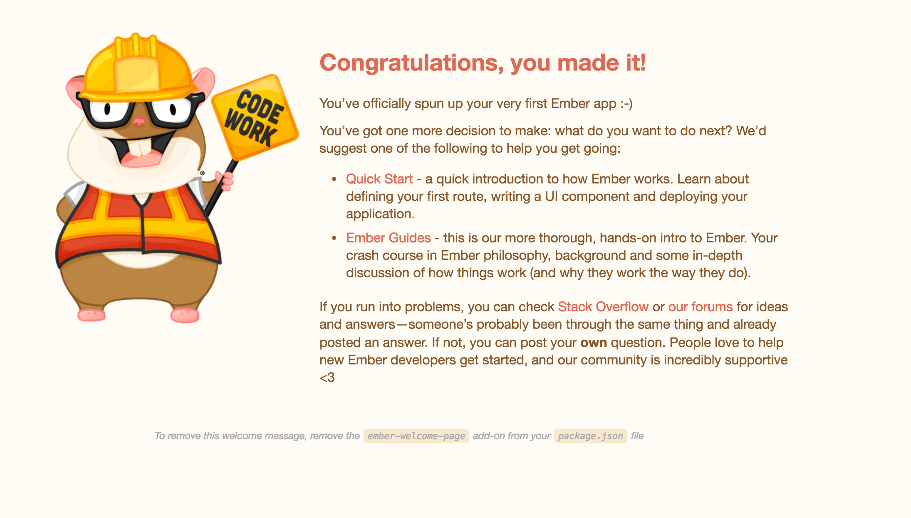

Começando Melhorar esta página
Bem-vindo ao Tutorial do Ember! Este tutorial destina-se a apresentar conceitos básicos para criar um aplicativo profissional com Ember. Se você ficar com dúvida em qualquer ponto durante o tutorial, sinta-se à vontade para baixar https://github.com/ember-learn/super-rentals, esse é o aplicativo completo construído neste tutorial.
Você vai precisar instalar a última versão do ember-cli seguindo o Guia Inicial na seção "Instalando Ember".
A ferramenta de linha de comando do Ember CLI possui inúmeras opções úteis para criar novos projetos, executar testes e diversos conjuntos ferramentas de desenvolvimento. Isso permite que os desenvolvedores Ember se concentrem na construção do aplicativo, em vez de criar estruturas para executa-lo.
No terminal, digite ember -help isso mostra todos os comandos disponíveis no Ember CLI. Para obter mais informações sobre um comando específico, digite ember help <command-name>.
Criando um novo aplicativo
Para criar um novo projeto usando o Ember CLI, use o comando new. Já pensando na próxima seção, você pode criar um aplicativo chamado super-rentals.
1 |
ember new super-rentals |
Um novo projeto será criado dentro do seu diretório atual. Agora você pode ir ao seu diretório do projeto super-rentals e começar a trabalhar nele.
1 |
cd super-rentals |
Estrutura de pastas e arquivos
O comando new cria um projeto padrão com essa estrutura de pastas e arquivos:
1 2 3 4 5 6 7 8 9 10 11 12 13 |
|--app |--config |--node_modules |--public |--tests |--vendor <other files> ember-cli-build.js package.json README.md testem.js |
Vamos dar uma olhada nas pastas e arquivos que o Ember CLI gerou.
app: É a principal pasta do projeto, é onde fica os models, components, routes, templates e styles. Basicamente é nesta pasta que todo o código do seu aplicativo vai ficar.
config: Essa pasta contém os arquivos de configurações para nosso aplicativo, como environment.js.
node_modules / package.json: Essa pasta e arquivo são do npm. Npm é um gerenciador de pacotes para Node.js.
Ember é construído com Node e usa diversos pacotes Node.js para executar. O arquivo package.json contém a lista de dependências de pacotes necessários para seu aplicativo. Qualquer Ember CLI Addons que você instale também aparecerá neste arquivo. Os pacotes listados no package.json estão instalados na pasta node_modules.
public: Essa pasta é onde você vai salvar imagens, svg, css ou outro recurso estático do seu aplicativo.
vendor: Você pode salvar nesta pasta dependências não gerenciadas pelo Bower como JavaScript e CSS de terceiros.
tests: Todos os testes automatizados como units, integrations e acceptances são salvos nesta pasta.
testem.js: Ember CLI executa os testes com testem, as configurações são salva em testem.js. Testem funciona integrado com QUnit e Mocha.
ember-cli-build.js: Contém todas as configurações necessárias de como Ember CLI deve construir seu aplicativo.
ES6 Modules
Se você olhar app/router.js, pode se que você não esteja familiarizado com algumas sintaxes.
| app/router.js | |
1 2 3 4 5 6 7 8 9 10 11 12 |
import Ember from 'ember'; import config from './config/environment'; const Router = Ember.Router.extend({ location: config.locationType, rootURL: config.rootURL }); Router.map(function() { }); export default Router; |
Ember CLI usa módulos ECMAScript 2015 (ES2015 conhecido como ES6) para organizar o código do aplicativo.
Por exemplo, a linha import Ember from 'ember'; da a você acesso completo a biblioteca do Ember.js. A linha import config from './config/environment'; da a você acesso as configuração do seu aplicativo. const é uma maneira de declarar uma variável de somente leitura para garantir que ela não será acidentalmente reatribuída em outro local. No final do arquivo, export default Router; torna a variável Router definida neste arquivo disponível para outros arquivos.
Servidor de desenvolvimento
Uma vez que temos um novo projeto, podemos verificar se tudo está funcionando iniciando o servidor de desenvolvimento do Ember:
1 |
ember server |
Se você acessar http://localhost:4200, você verá a tela de boas-vindas padrão.
Quando você editar o arquivo app/templates/application.hbs, esse conteúdo será substituído.

A primeira coisa que queremos fazer em nosso novo projeto é remover a tela de boas-vindas.
Você pode fazer isso abrindo o arquivo de template localizado em app/templates/application.hbs.
Uma vez aberto, remova o componente chamado {{welcome-page}}.
O aplicativo agora deve ter uma tela completamente em branco, pronto para iniciarmos nosso aplicativo.